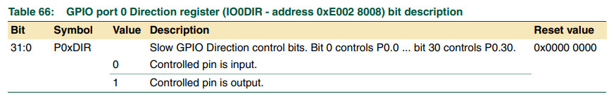

參考資料：
https://www.keil.com/dd/docs/datashts/philips/user_manual_lpc2101_2102_2103.pdf
暫存器

.equ IOPIN, 0xe0028000
.equ IOSET, 0xe0028004
.equ IODIR, 0xe0028008
.equ IOCLR, 0xe002800c
.text
.align 2
.global _start
_start: b reset
_undef: b .
_swi: b .
_pabort: b .
_dabort: b .
_reserved: b .
_irq: b .
_fiq: b .
reset:
ldr r0, =IODIR
ldr r1, =(1 << 22)
str r1, [r0]
loop:
ldr r0, =IOPIN
ldr r0, [r0]
and r0, #(1 << 14)
cmp r0, #(1 << 14)
bne 1f
0:
ldr r0, =IOCLR
ldr r1, =(1 << 22)
str r1, [r0]
b loop
1:
ldr r0, =IOSET
ldr r1, =(1 << 22)
str r1, [r0]
b loop
.end
完成